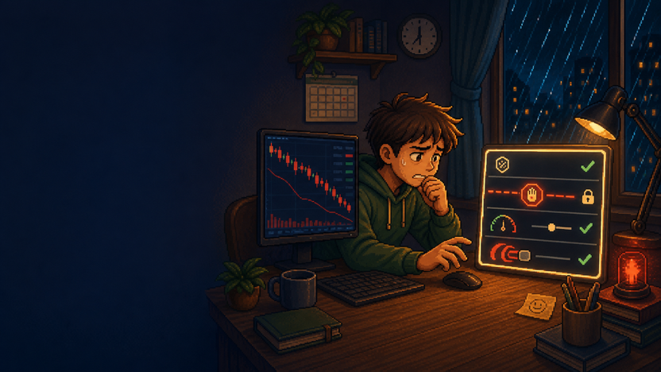
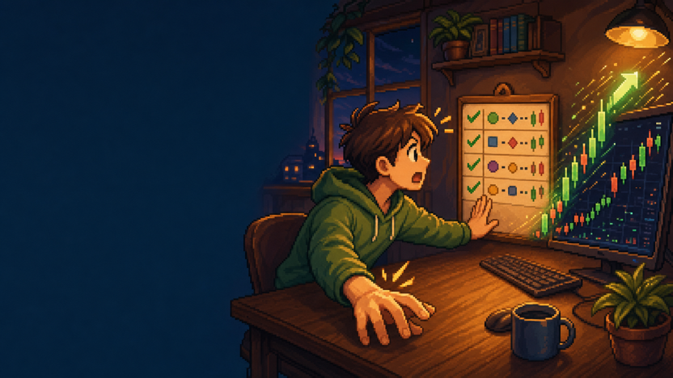
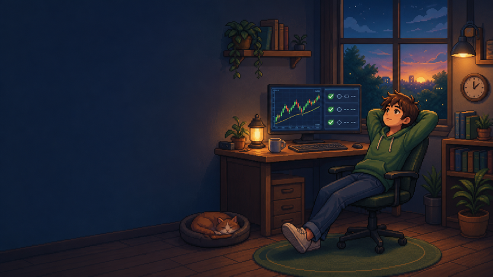
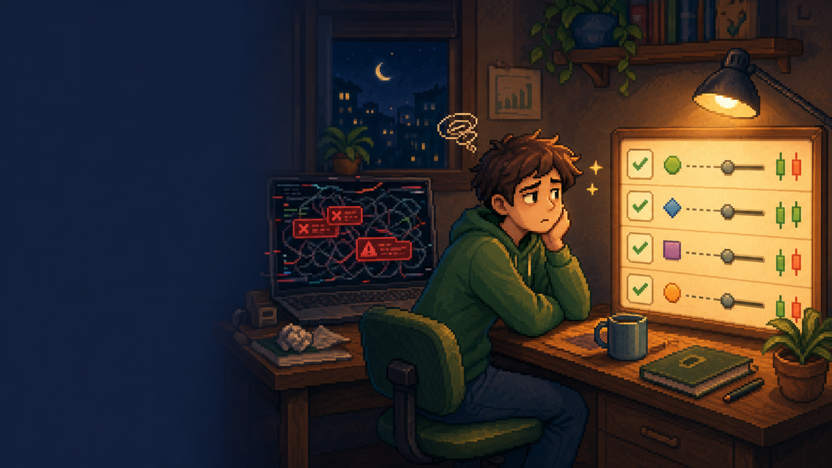
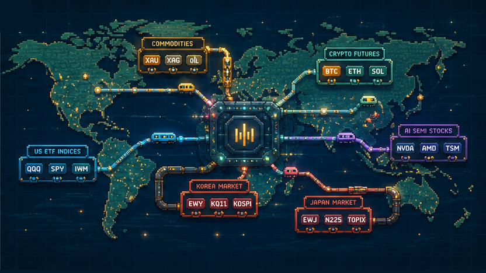
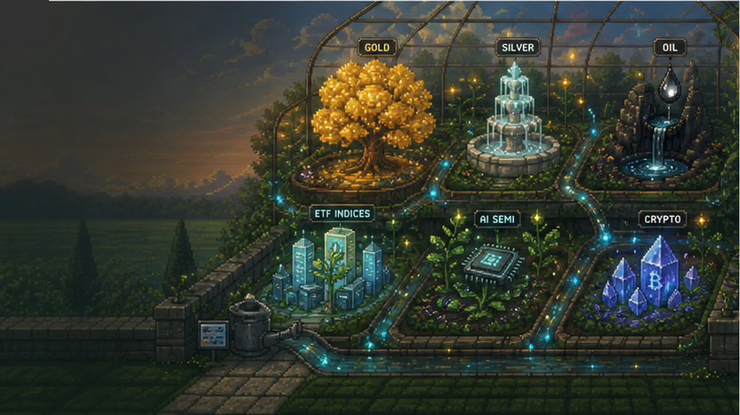
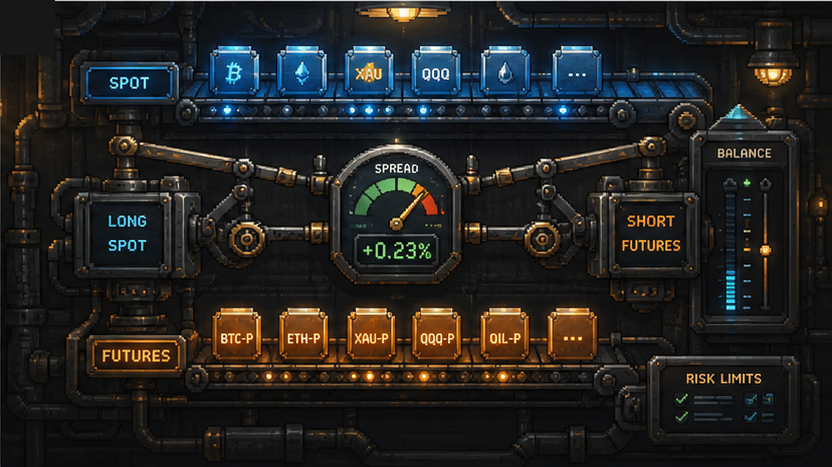

Set your exit price
before the market shakes you.
So your hand does not move first in a falling market.
Up or down, hedge both sides — executed only within the limits your rules set.




The way PIANO operates belongs to a well-established institutional strategy family — applied identically for every user.
Classification describes how the tool works; it does not guarantee returns. The same tool is provided to every user.
The figures below are the actual performance of one live account running two configurations (delta/gamma). Past results do not guarantee future returns.
Measurement period —
These are realized past results of a single live account running two configurations (delta/gamma), losses included. Return is the change in the account’s net equity over the measurement period, with the effect of deposits and withdrawals removed; win rate and trade count cover both configurations and count individual hedge legs. Past performance, backtests, and simulations do not guarantee future returns, and you may lose principal. The same tool is provided to every user.
One way to diversify
You set the assets, conditions, and limits
Same approach you used with S&P 500 for the US or Nikkei ETFs for Japan. Global assets, one screen.
Similar to using inverse ETFs to cushion drawdowns. Hedging and diversifying happen within the conditions you set in advance.
When the US market opens in the middle of the night in Korea, the alarm rings but the hand doesn't move. Set conditions and limits in advance — the tool moves only within them, even while you sleep.
USDT is a stablecoin pegged to the US dollar. Assets you hold in USDT follow the dollar's price flow, giving you a way to hold assets in a unit other than KRW. The peg can vary depending on issuer trust.
Choose the assets, define conditions and limits, then activate execution only inside those boundaries.
You pick the assets Piano will watch. Piano doesn't recommend any asset or judge what's right for you.
Define entry conditions, exit conditions, risk limits, and position size. The condition filter only checks whether your rules are met.
After you approve API permissions, Piano monitors, places orders, and corrects ratio drift only inside your configured conditions. Execution history stays visible on the dashboard.
After setup, these mechanisms check conditions, correct drift, and execute only within the boundaries you define.
Market conditions are evaluated before entering. Execution only happens when your configured conditions are met.
Entry / Risk gateWhen market movements drift a user-defined portfolio or hedge ratio, Piano evaluates the rule set in real time and adjusts positions inside configured limits.
Rebalance / condition correctionPiano can automate long and short position sizing for user-defined strategies. When configured exit conditions are met, orders are executed according to the user's rules.
DCA + auto-rebalancePiano connects to Binance via API but never holds or transfers your assets.
You create it directly on Binance
Only keys without withdrawal permission are used
Access only from authorized server IPs
Revoke the API key and access is cut immediately
You set every condition yourself and can change them anytime
Each user runs in a separated environment
If you want to look beyond one stock screen, gold, oil, and ETF-linked flows can be watched through conditions you set.
Ticker badges are illustrative market examples. Availability depends on exchange support and user approval.
Gold, oil, ETF-linked and stock-linked futures move for different reasons. Piano only brings the instruments you have selected into the same condition-based view.

Gold is watched when investors look for safety. Oil often reflects inflation, transport costs, and global demand. These markets can show signals that differ from a single price screen.
ETF-linked futures can express the flow of a broad market: U.S. large caps, Nasdaq tech, Korea, Japan, and other supported regions. One rule can watch a market basket instead of one instrument.
Selected stock-linked futures can reflect attention around big tech, AI semiconductors, electric vehicles, or crypto-linked companies. Availability changes by exchange, so Piano keeps execution inside supported instruments.
Piano is not only about guessing direction. Basis hedge remains a core edge: monitoring spot-futures or related market spreads, correcting drift, and executing only within the conditions you set.
Hedge funds, asset managers, and market-making desks use futures and derivatives to diversify, hedge, and manage risk. Piano brings that operating logic into user-defined rule automation, without providing investment advice or return promises.

Gold, oil, ETFs, AI stocks, and crypto can react to different market forces. The garden scene turns diversification into a calm, memorable visual story.
Gold, oil, ETF-linked indices, stock-linked futures, and crypto can react to different drivers. Looking across markets is a basic risk-management habit in professional portfolios.
Professional desks do not only try to call direction. They manage position exposure, ratios, and drift. Piano automates hedge and rebalance structures within the conditions you set.
A strategy should not be improvised after volatility arrives. Define target assets, entry conditions, limits, and exits first; then let software execute inside that boundary.
The workshop scene shows the core idea without overpromising: spot and futures legs move together, the spread is measured, and execution stays inside user-defined gates.

No fees tied to profits or trading volume.
Pricing varies by operating environment and is shared on request.
Contact Us →1. Piano is a software tool. — It is not an investment advisory, discretionary investment management, or financial product brokerage service.
2. Piano does not solicit investments. — It does not recommend or solicit the purchase or sale of any specific assets.
3. Piano automatically executes trades within the conditions set by the user. — Algorithms are used only for market signal analysis; the execution scope is set by the user.
4. Activating automated trading is the user's own approval and responsibility. — The user directly approves the strategy, target assets, risk limits, and API permissions before activation. All investment gains and losses are the user's responsibility.
5. Piano does not guarantee returns. — Past performance, backtests, and simulation results do not guarantee future returns.
Crypto futures and market-linked futures or derivative trading involves significant risk and may result in the complete loss of principal. Automated execution can amplify losses if parameters are unsuitable or market conditions change. Before activating any strategy, carefully consider your financial situation, investment experience, and risk tolerance.